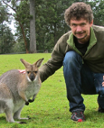

AI4PAN
Artificial Intelligence for Pandemics
Centered at The University of Queensland
Twitter: @ai4pan
YouTube: channel
Admin contact e-mail Roxanne Jemison
Seminar academic contact e-mail Aminath Shausan
Academic contact e-mail Yoni Nazarathy
Welcome to AI4PAN, The Artificial Intelligence for Pandemics group centered at The University of Queensland (UQ). The group's focus is the application of data science, machine learning, statistical learning, applied mathematics, computation, and other "artificial intelligence" techniques for managing pandemics both at the epidemic and clinical level.
Our fortnightly AI4PAN Seminar run via Zoom at 10am on Wednesdays (AEST = Brisbane time zone) and monthly from June 8th, 2022. Organized by Roxanne Jemison, and Aminath Shausan. See the Seminar Schedule with links to recorded talk.
Active Research Projects
- Safe Blues. Live updates from The University of Auckland 2021 campus experiment
- ISARIC IInternational Severe Acute Respiratory and Emerging Infections Consortium) contributed by Sally Shrapnel and team.
- Project Acute Kidney Injury in COVID-19 led by Sally Shrapnel
- The host response as an alternative early diagnostic for viral infection
by Meagan Carney and Kirsty Short
Click to expand
Since the initial outbreak of Coronavirus Disease 2019 (COVID-19) in Wuhan, China, over 215 million subsequent cases have been recorded. The causative agent, Severe Acute Respiratory Coronavirus 2 (SARS-CoV-2) is highly transmissible and characterized by a heterogenous respiratory disease that ranges from mild symptoms to acute respiratory distress syndrome and death. Over 4.5 million deaths have been recorded to date. Direct detection of viral RNA via quantitative polymerase chain reaction (qPCR) is a highly sensitive and specific diagnostic tool for SARS-CoV-2 and the current gold standard for testing. However, whilst highly sensitive, a certain threshold of viral RNA must be present for subsequent amplification and detection by qPCR. Accordingly, it is possible for a close contact of a SARS-CoV-2 positive individual to initially test negative for the virus but then later in the incubation period, when there is increased viral replication, to test positive. As a result, current public health guidelines in Australia require close contacts of a SARS-CoV-2 positive case, as well as passengers from overseas, to quarantine for the entirety of the viral incubation period (14 days). The time taken for an infected individual to be identified by qPCR also has implications for anti-viral therapeutics. Current monoclonal antibody therapeutics are most efficacious if given early in infection. Thus, the importance of identifying SARS-CoV-2 positive individuals as early as possible early in infection is appreciable. Here, we hypothesise that there is a gene signature in the nasopharynx that can be detected in SARS-CoV-2 positive individuals prior to the detection of viral RNA using qPCR. To test this hypothesis we will use a combination of clinical samples and unsupervised machine learning clustering methods to potentially develop a new, early diagnostic for SARS-CoV-2 infection. - Large scale COVID19 vaccination behaviour monitoring on social media by Ajay Hemanth Sampath Kumar, Aminath Shausan and Afshin (Ash) Rahimi
- Bounding the extinction time of a spatial epidemic by Ross McVinish and Xiao-Yu Anita Lin
Related UQ Projects and Groups
- CoRiCal: Covid Risk Calculator CoRiCal co-chairs: Andrew Baird, John Litt and Kirsty Short
- CRISPER project Colleen Lau
- Digital Health Research Network with Clair Sullivan and team
Research Publications
- Ancestral SARS-CoV-2, but not Omicron, replicates less efficiently in primary pediatric nasal epithelial cells by Yanshan Zhu et al.
- Early short course of neuromuscular blocking agents in patients with COVID-19 ARDS: a propensity score analysis by Gianluigi Li Bassi et al.
- The value of open-source clinical science in pandemic response: lessons from ISARIC by Ali Abbas et al.
- Clinical characteristics, risk factors and outcomes in patients with severe COVID-19 registered in the International Severe Acute Respiratory and Emerging Infection Consortium WHO clinical characterisation protocol: a prospective, multinational, multicentre, observational study by Luis Felipe Reyes et al.
- Use of an extended KDIGO definition to diagnose acute kidney injury in patients with COVID-19: a multinational study using the ISARIC–WHO clinical characterisation protocol by Marina Wainstein et al.
- Ten months of temporal variation in the clinical journey of hospitalised patients with COVID-19: An observational cohort by ISARIC Clinical Characterisation Group et al.
- Designing an evidence-based Bayesian network for estimating the risk versus benefits of AstraZeneca COVID-19 vaccine. by Helen Mayfield, Colleen Lau, Jane Sinclair, Samuel Brown, Andrew Baird, John Litt, Aapeli Vuorinen, Kirsty Short, Michael Waller and Kerrie Mengersen.
- Limited recognition of highly conserved regions of SARS-CoV-2 by Srividhya Swaminathan et al.
- Development of molecular clamp stabilized hemagglutinin vaccines for Influenza A viruses by Christopher L.D. McMillan et al.
- Profiling of lung SARS-CoV-2 and influenza virus infection dissects virus-specific host responses and gene signatures by Arutha Kulasinghe et al.
- Flower lose, a cell fitness marker, predicts COVID‐19 prognosis by Michail Yekelchyk.
- SARS-CoV-2-specific T cells generated for adoptive immunotherapy are capable of recognizing multiple SARS-CoV-2 variants by Archana Panikkar et al.
- Dysregulated inflammation during obesity: driving disease severity in influenza virus and SARS-CoV-2 infections by Katina Hulme, Ellesandra Noye, Kirsty Short and Larisa Labzin.
- The Role of Children in SARS-CoV-2 Variant of Concerns Transmission within Households: A Meta-analysis by Yanshan Zhu, Yao Xia, Janessa Pickering, Ash C. Bowen and Kirsty Short.
- Use of an extended KDIGO definition to diagnose acute kidney injury in patients with COVID-19: A multinational study using the ISARIC- WHO clinical characterisation protocol by Wainstein, M., et al. Sally Shrapnel Group.
- Emulation of epidemics via Bluetooth-based virtual safe virus spread: experimental setup, software, and data by Azam Asanjarani et al.
- Effect of vaccination rates on the prevalence and mortality of COVID-19 by Jacob Westerhout, Hamid Khataee and Zoltan Neufeld.
- Clinical characteristics, risk factors and outcomes in patients with severe COVID-19 registered in the International Severe Acute Respiratory and Emerging Infection Consortium WHO clinical characterisation protocol: a prospective, multinational, multicentre, observational study by Luis Felipe Reyes et al.
- Risk–benefit analysis of COVID-19 vaccines — a neurological perspective by Colleen Lau & Ian Galea.
- Endothelial cells are not productively infected by SARS-CoV-2 by Lilian Schimmel, Keng Yih Chew, Claudia J Stocks, Teodor E Yordanov, Patricia Essebier, Arutha Kulasinghe, James Monkman, Anna Flavia Ribeiro dos Santos Miggiolaro, Caroline Cooper, Lucia de Noronha, Kate Schroder, Anne Karine Lagendijk, Larisa I Labzin, Kirsty R Short and Emma J Gordon.
- Risk-benefit analysis of the AstraZeneca COVID-19 vaccine in Australia using a Bayesian network modelling framework by Colleen L Lau, Helen J Mayfield, Jane E Sinclair, Sam J Brown, Michael Waller, Anoop K Enjeti, Andrew Baird, Kirsty R Short, Kerrie Mengersen and John Litt.
- COVID-19 symptoms at hospital admission vary with age and sex: results from the ISARIC prospective multinational observational study by ISARIC Clinical Characterisation Group and Sally Shrapnel.
- Intensive care digital health response to emerging infectious disease outbreaks such as COVID-19 by Marianne Kirrane, Sally Shrapnel, Mahesh Ramanan, Pierre Clement, John F Fraser, Kevin B Laupland, Clair M Sullivan, and Kiran Shekar.
- Diabetes and overweight/obesity are independent, nonadditive risk factors for in-hospital severity of COVID-19: an international, multicenter retrospective meta-analysis by Danielle K Longmore, Jessica E Miller, Siroon Bekkering, Christoph Saner, Edin Mifsud, Yanshan Zhu, Richard Saffery, Alistair Nichol, Graham Colditz, Kirsty R Short, and David P Burgner.
- The role of T-cell immunity in COVID-19 severity amongst people living with type II diabetes by Zhen Wei Marcus Tong, Emma Grant, Stephanie Gras, Melanie Wu, Corey Smith, Helen L. Barrett, Linda A. Gallo and Kirsty R. Short.
- A meta-analysis on the role of children in SARS-CoV-2 in household transmission clusters by Yanshan Zhu, Conor J Bloxham, Katina D Hulme, Jane E Sinclair, Zhen Wei Marcus Tong, Lauren E Steele, Ellesandra C Noye, Jiahai Lu, Yao Xia, Keng Yih Chew, Janessa Pickering, Charles Gilks, Asha C Bowen, and Kirsty R Short.
- Transition from growth to decay of an epidemic due to lockdown by Hamid Khataee, Jack Kibble, Istvan Scheuring, Andras Czirok, and Zoltan Neufeld.
- Modelling the collective mechanical regulation of the structure and morphology of epithelial cell layers by Hamid Khataee, Madeleine Fraser and Zoltan Neufeld.
- Effects of social distancing on the spreading of COVID-19 inferred from mobile phone data by Hamid Khataee, Istvan Scheuring, Andras Czirok and Zoltan Neufeld.
- Targeted adaptive isolation strategy for COVID-19 pandemics by Zoltan Neufeld, Hamid Khataee and Andras Czirok.
- Safe Blues: The case for virtual safe virus spread in the long-term fight against epidemics by Raj Dandekar, Shane G. Henderson,Hermanus M. Jansen, Joshua McDonald, Sarat Moka, Yoni Nazarathy, Christopher Rackauckas, Peter G. Taylor, and Aapeli Vuorinen.
- Safe Blues: A Method for Estimation and Control in the Fight Against COVID-19 by Raj Dandekar, Shane G Henderson, Marijin Jansen, Sarat Moka, Yoni Nazarathy, Christopher Rackauckas, Peter G Taylor and Aapeli Vuorinen.
- The host response as an alternative early diagnostic for viral infection by Meagan Carney and Kirsty Short
Group Contributors
-
Dr Meagan Carney's
research interests include probability and statistics of extremes in chaotic systems,
rare event analysis, dynamical systems, unsupervised learning algorithms, and
applications of importance sampling methods.
-
A/Prof. Marcus Gallagher's
expertise is in Artificial Intelligence, Optimization and Machine Learning
algorithms, including the theory, development and practical applications of these
techniques. He collaborated with Queensland Health in the area of anomaly detection
in drug prescription data.

-
A/Prof. Cecilia González Tokman's
expertise is in Dynamical Systems, Ergodic Theory and related areas.
Her recent work focuses on random dynamical systems, transfer operators, Lyapunov exponents
and coherent structures.

-
Dr. Hamid Khataee's
expertise is in Mathematical and computational modelling, Applied mathematics, Theoretical Biology
including computational modelling of morphological dynamics of cell populations, mechanics of
molecular motors, and quantification and modelling of epidemic data.

-
Prof. Geoff McLachlan's
expertise is in statistics in the related fields of classification, cluster and discriminant
analyses, image analysis, machine learning, neural networks, and pattern recognition, and in
the field of statistical inference.
-
A/Prof. Yoni Nazarathy's (coordinator)
expertise is in Machine Learning, Applied Probability,
Statistics, Operations Research, Simulation, Scientific Computing, Control Theory,
Queueing Theory, Scheduling, and Mathematical Education. His involvement with AI4PAN
is through the Safe Blues project.

-
Dr. Zoltan Neufeld's
expertise is in Mathematical and computational modelling, Applied mathematics, Mathematical Biology
including analysis of epidemic models, computational models of multicellular tissue biology,
collective cell motility, mechano-biology, pattern formation and tissue development.

-
Dr. Ash Rahimi's research interests fall
within the fields of Natural Language Processing, Social Network Analysis and Machine
Learning. I am specifically interested in exploiting both structured and unstructured
data to help machines understand conversational language in Emergency Situations
and Health Informatics.

-
Dr. Aminath Shausan's
expertise focuses on statistical and probability modelling and analysis of epidemics.
Expertise in Bayesian statistical analysis of dengue modelling, Artificial intelligence
to project to understand pandemics.

-
Dr. Kirsty Short
is an influenza virologist by training with extensive experience in emerging viral
pathogens and pandemic preparedness. With expertise working on SARS-CoV-2 and
in particular the role of children in disease spread, the impact of this disease
on people with diabetes and the development of new antiviral therapies.

-
Dr. Sally Shrapnel
is an interdisciplinary scientist working at the interface of causality and machine
learning. She has both a clinical and technical background, with bachelor's degrees
in Medical Science, Medicine and Surgery, a Fellowship of the Royal Australian
College of General Practitioners, a Master's degree in Bioengineering (Imperial College, London)
and a PhD in physics and philosophy—on the topic of quantum causal machine learning.

-
Dr. Ian Wood's
research expertise covers classification, bioinformatics, stochastic optimisation,
machine learning and mixture models.


Media
Tweets by ai4pan- August 2022: UQ News, Kids’ noses can better fight COVID-19
- March 2022: ABC News, Queensland pharmacies struggle to enforce 'inconsistent' COVID-19 mask mandate amid confusion over rules
- January 2022: Health Europa, Reducing vaccine hesitancy with new COVID-19 risk calculator
- January 2022: In Queensland, Local researchers develop calculator to assess your chance of getting COVID
- December 2021: Mirage News, Covid calculator updated
- December 2021: UQ News, COVID calculator updated
- December 2021: UQ News, Know the facts about Covid-19 with UQ's Kirsty Short. In this episode Kirsty talks about borders re-opening and the importance of herd immunity.
- November 2021: ABC News, Australia monitors Nu COVID-19 variant
- October 2021: 4BC882 News Talk, That's just not possible !': Virologist busts the big COVID-19 vaccine myths'
- October 2021: UQ News, Vascular disease in COVID-19 is not caused by viral infection of blood vessels
- October 2021: Juan News, Calculator to measure your risk of Covid-19 infection and vaccination
- October 2021: Bigworldfree4u, COVID-19 risk described in new tool
- October 2021: My Asian Marketplace, COVID-19 risks explained with new tool
- October 2021: KNews, Australian researchers develop an online tool to assess COVID-19 risk
- October 2021: Armenia News, The new ‘calculator’ identifies individual risks in COVID-19
- October 2021: Planet Concerns, Calculator to measure your risk of Covid-19 infection and vaccination
- October 2021: Botswana News, New ‘calculator’ determines individual COVID-19 risks
- October 2021: OURTOPNEWS, Online COVID-19 Threat Calculator Reveals Your Tailored Danger of Infection
- October 2021: The Hippocratic Post, COVID-19 risks explained with new calculator
- October 2021: Blogarama, COVID-19 risks explained with new calculator
- October 2021: Instant News, Australian researchers launch COVID-19 calculator that assesses your risk from the virus
- October 2021: NewsFinale, New ‘calculator’ determines individual COVID-19 risks
- October 2021: Tittle Press, Australian researcher launch COVID-19 calculator that assesses your risk of contracting the virus
- October 2021: Xnewsnet, COVID -19 risks are explained with a new tool – UQ News
- October 2021: Head topics Australia, Australian researchers launch COVID-19 calculator to assess risk of dying from virus
- October 2021: NowYouReadMe.com, New calculator explains risk factors for COVID-19 infection and vaccination
- October 2021: Florida News Times, COVID-19 risk described in new tool
- October 2021: BioSpectrum Asia Edition, Australia launches new tool to explain COVID-19 risks
- October 2021: News GP, Online tool helps assess risks from COVID-19 and vaccination
- October 2021: SciTechDaily, Online COVID-19 Risk Calculator Shows Your Personalized Risk of Infection
- October 2021: ExBulletin, Australian researchers have announced a COVID-19 calculator to assess the risk of viruses
- October 2021: China.org.cn, Aussie researchers develop online tool to assess COVID-19 risk
- October 2021: Tripple J News, The calculator is meant to show the importance of getting vaccinated.
- October 2021: ABC Southern Queensland, Unveiling a COVID-19 risk calculator
- October 2021: Xinhua, Aussie researchers develop online tool to assess COVID-19 risk
- October 2021: Sunrise Queensland News, Researchers at the University of Queensland have helped launch a new online tool enabling people to better understand their risk of catching COVID-19
- October 2021: National Nine News, A new tool is being launched by the immunisation Coalition and the University of Queensland
- October 2021: ABC News, You can now find out how at risk you are from COVID-19
- October 2021: UQ News, COVID-19 risks explained with new tool
- October 2021: ABC Radio Melbourne, The COVID-19 risk calculator allowing people to assess their chances of catching the virus and dying from.
- October 2021: ABC Radio Brisbane, A COVID risk calculator allowing people to assess their chances of catching the virus and dying from it is is being launched today.
- October 2021: ABC News, Australian researchers launch COVID-19 calculator that assesses your risk from the virus
- October 2021: Herald Sun, New Australian tool to measure your risk of Covid-19 infection and vaccination
- October 2021: Nine News, Third COVID-19 vaccine doses already being given out in Victoria
- September 2021: ABC News, Experts examine fears and misconceptions fuelling Queensland's slow COVID-19 vaccine uptake
- September 2021: ABC News, Influenza cases hit an all-time low in Australia in 2021 — that could be a problem when it returns
- September 2021: The Australian, Q&A: Dr Kirsty Short, virologist, 34
- September 2021: Bloomberg, Improving Pandemic Preparedness
- September 2021: ABC News, Queensland Premier Annastacia Palaszczuk defends demand for updated research on COVID-19 impacts of reopening on children
- September 2021: The Courier Mail, How Queensland researchers are preparing for the next pandemic with Kirsty Short
- August 2021: ACEMS Podcast, Episode 59: Experiment in Lockdown
- August 2021: ABC News, When can my child get vaccinated against COVID? Are the vaccines safe for kids?
- August 2021: The University of Auckland, University experiment mimics Covid-19
- August 2021: UQ Faculty of Science, NZ's lockdown effectiveness tracked with digital 'virus'
- August 2021: Sydney Morning Herald, No dodging Delta as COVID outbreak spreads in Queensland
- August 2021: Brisbane Times, No dodging Delta as COVID outbreak spreads in Queensland
- July 2021: UQ Contact Magazine, Ticket to Freedom
- July 2021: Stochastic Lifestyle, Learning Epidemic Models That Extrapolate, AI4Pandemics
- June 2021: FQXi, The quantum clock-maker investigating COVID-19, causality, and the trouble with AI
- June 2021: The University of Queensland, Machine Learning for acute kidney injury in COVID 19
- June 2021: The Conversation, What’s the Delta COVID variant found in Melbourne? Is it more infectious and does it spread more in kids? A virologist explains
- March 2021: The Australia Business Review, Artificial intelligence to help pinpoint COVID diseases. Sally Shrapnel, Data scientists will use artificial intelligence to identify which COVID patients will likely experience longer-term conditions such as kidney damage.
- March 2021: The Conversation, We’ve designed a safe ‘virtual’ epidemic. Spreading it is going to help us learn about COVID